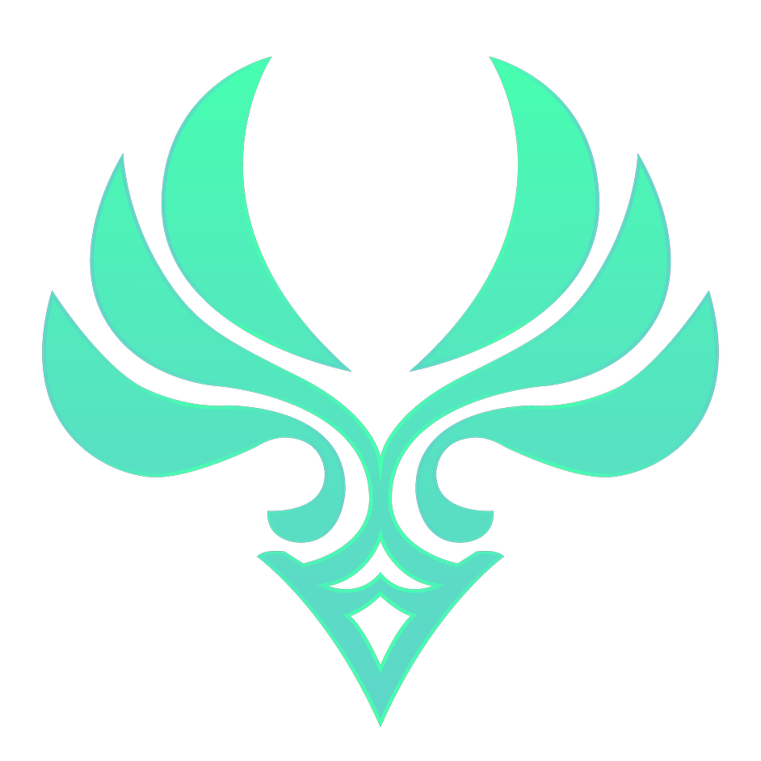
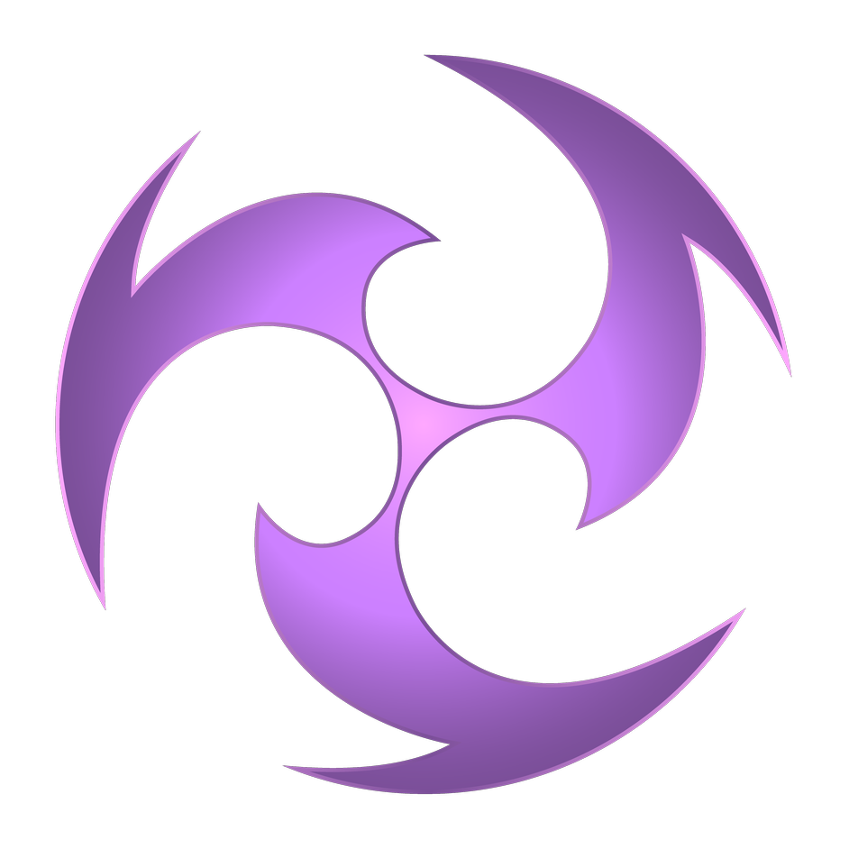
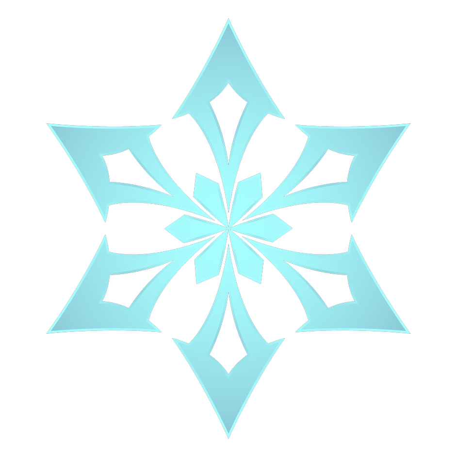

《原神》是由米哈游自主研发的一款全新开放世界冒险游戏。游戏发生在一个被称作「提瓦特」的幻想世界，在这里，被神选中的人将被授予「神之眼」，导引元素之力。你将扮演一位名为「旅行者」的神秘角色在自由的旅行中邂逅性格各异、能力独特的同伴们，和他们一起击败强敌，找回失散的亲人——同时，逐步发掘「原神」的真相。
这里是七种元素交汇的幻想世界“提瓦特”。在遥远的过去，人们藉由对神灵的信仰，获赐了驱动元素的力量，得以在荒野中筑起家园。五百年前，古国的覆灭却使得天地变异……如今，席卷大陆的灾难已经停息，和平却仍未如期光临。作为故事的主人公，你从世界之外漂流而来，降临大地。你将在这广阔的世界中，自由旅行、结识同伴、寻找掌控尘世元素的七神，直到与分离的血亲重聚。
火 水 风 雷 草 冰 岩
带有元素属性的攻击每3次或两次攻击间隔大于2.5s均可附着一次元素，附着在同一生物上的两种及以上元素有机会发生元素反应
元素反应是二元无序的，有以下几种： 蒸发(+)、 冻结(+)、 融化(+)、 超导(+)、 燃烧(+)、 绽放(+)、 激化(+)、 扩散(+///)、 结晶(+///)
神明：巴巴托斯
执政：自由
五星角色：迪卢克、可莉、莫娜、温迪(巴巴托斯)、琴、优菈、阿贝多
四星角色：安柏、班尼特、芭芭拉、砂糖、雷泽、菲谢尔、丽莎、米卡、罗莎莉亚、迪奥娜、凯亚、诺艾尔
神明：摩拉克斯
执政：契约
五星角色：胡桃、夜兰、魈、闲云、刻晴、白术、申鹤、七七、甘雨、钟离(摩拉克斯)
四星角色：烟绯、辛焱、香菱、嘉明、行秋、北斗、瑶瑶、重云、云堇、凝光
神明：巴尔泽布
执政：永恒
五星角色：宵宫、神里绫人、珊瑚宫心海、枫原万叶、雷电将军(影)、八重神子、神里绫华、千织、荒泷一斗
四星角色：托马、鹿野院平藏、早柚、九条裟罗、久岐忍、绮良良、五郎
神明：布耶尔
执政：智慧
五星角色：迪希雅、妮露、流浪者、赛诺、艾尔海森、提纳里、纳西妲(小吉祥草王)
四星角色：坎蒂丝、珐露珊、赛索斯、多莉、卡维、柯莱、莱依拉
神明：芙卡洛斯
执政：正义
五星角色：林尼、芙宁娜(芙卡洛斯)、那维莱特、希格雯、克洛琳德、艾梅莉埃、莱欧斯利、娜维娅
四星角色：夏沃蕾、琳妮特、夏洛蒂、菲米尼
神明：赫布里穆
执政：战争
五星角色：玛拉妮、恰斯卡、基尼奇、希诺宁
四星角色：欧洛伦、卡齐娜
神明：巴纳巴斯
执政：怜爱
五星角色：阿蕾奇诺、达达利亚
四星角色：暂无
每个角色都有一种元素属性(神之眼)和武器类型(单手剑、双手剑、长柄武器、弓、法器)
每个角色都有以下操作：普通攻击、重击、下落攻击、元素战技、元素爆发
角色&武器获取：基本上通过祈愿(抽卡)获得
等级：需要消耗经验书进行升级，每到一定等级还需消耗世界boss掉落材料、小怪掉落材料、世界采集材料来突破
天赋：是提升角色攻击伤害的手段，需要消耗天赋副本材料、小怪掉落材料、周本boss掉落材料
圣遗物：是提升角色属性的手段，需要挑战圣遗物副本获取
命之座：是提升角色属性、加强角色机制的手段，通过祈愿获取的多余同一角色转换获得